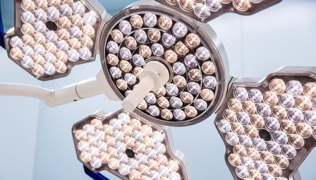

<!doctype html>
<html lang="zh">
 <head> 
  <meta charset="UTF-8"> 
  <meta http-equiv="X-UA-Compatible" content="IE=edge"> 
  <meta name="viewport" content="width=device-width, initial-scale=1"> 
  <title>Medical</title> 
  <link rel="stylesheet" type="text/css" href="../css/animate.css"> 
  <link rel="stylesheet" type="text/css" href="../css/bootstrap.min.css"> 
  <link rel="stylesheet" type="text/css" href="../css/owl.carousel.css"> 
  <link rel="stylesheet" type="text/css" href="../css/owl.theme.css"> 
  <link rel="stylesheet" type="text/css" href="../css/owl.transitions.css"> 
  <link rel="stylesheet" type="text/css" href="../css/font-awesome.min.css"> 
  <link rel="stylesheet" type="text/css" href="../css/main.css"> 
 </head> 
 <body> 
  <section class="navs"> 
   <nav class="navbar navbar-default navbar-fixed-top" role="navigation"> 
    <div class="container-fluid"> 
     <!-- Brand and toggle get grouped for better mobile display --> 
     <div class="navbar-header"> 
      <button type="button" class="navbar-toggle collapsed" data-toggle="collapse" data-target="#bs-example-navbar-collapse-1"> <span class="sr-only">Toggle navigation</span> <span class="icon-bar"></span> <span class="icon-bar"></span> <span class="icon-bar"></span> </button> 
      <a class="navbar-brand logo" href="#"> <span><i class="fa fa-stethoscope"></i></span> Medical </a> 
     </div> 
     <!-- Collect the nav links, forms, and other content for toggling --> 
     <div class="collapse navbar-collapse" id="bs-example-navbar-collapse-1"> 
      <ul class="nav navbar-nav navbar-right"> 
       <li class="active"><a href="#">官网主页</a></li> 
       <li><a href="../services.html">服务中心</a></li> 
       <li><a href="../doctors.html">医生团队</a></li> 
       <li><a href="../news.html">动态新闻</a></li> 
       <li><a href="../faq.html">常见问题</a></li> 
       <li><a href="../gallery.html">企业展示</a></li> 
       <li><a href="../contact.html">联系我们</a></li> 
      </ul> 
     </div>
     <!-- navbar-collapse --> 
    </div>
    <!-- container-fluid --> 
   </nav> 
  </section> 
  <div class="container-fluid" style="margin-top: 75px;margin-bottom: 165px;"> 
   <div class="row"> 
    <div class="col-md-3"> 
     <div id="rh-sidebar"></div> 
    </div> 
    <div class="col-md-9"> 
     <div class="row"> 
      <div class="col-md-3"> 
        
      </div> 
      <div class="col-md-8"> 
       <h3 class="product-name">沃伦韦尔Seirios系列LED手术灯</h3> 
       <p class="product-brand">Seirios系列</p> 
       <p class="product-summary">Seirios系列LED手术灯：采用LED光源，拥有优秀的显色指数，真实的呈现出组织结构，使医生工作更得心应手，配以高性能的透镜，可得到极佳的无影效果和均匀的光斑，且在光斑可调范围内均能实现高达16万lux的最佳术区照明，完善的视频解决方案，可完美整合入一体化手术室系统。产品介绍：SEIRIOS系列手术无影灯采用LED照明光源，具备照度、色温、光斑同时多档可调的极高性能，带来完美的照明效果、优异的操作感和极高的可靠性。其创新的花瓣形外观设计，具备极好的散热性能，有效降低术野温升。预设的多种阴影控制模式能够为手术医生提供清晰的手术视野，是符合现代化医院使用要求的手术无影灯。 产品性能结构及组成：SEIRIOS系列手术无影灯分为单灯头、双灯头两种，主要由基座、旋转臂、平衡臂、灯头、消毒手柄、操作面板组成，为防故障手术无影灯。可选配墙控操作面板、无线控制盒、摄像系统和显示器，其中摄像系统和显示器为外购件。 基本参数：中心照度(Ec)：160000lx(其中，SEIRIOS3000：140000lx)，光柱深度：1200mm，显色指数(Ra)：95，特殊显色指数(R9)：≥95，色温(Tc)：(3500K～5000K)，总辐照度(Ee)：≤350W/m2，辐照度(Ee)和照度(Ec)比值：≤3.6mW/(m2.lx)。</p> 
      </div> 
      <div class="col-md-1"></div> 
     </div> 
     <div class="row"> 
      <div class="col-md-11"> 
       <div class="product-details">
        Seirios系列LED手术灯：采用LED光源，拥有优秀的显色指数，真实的呈现出组织结构，使医生工作更得心应手，配以高性能的透镜，可得到极佳的无影效果和均匀的光斑，且在光斑可调范围内均能实现高达16万lux的最佳术区照明，完善的视频解决方案，可完美整合入一体化手术室系统。 产品介绍： SEIRIOS 系列手术无影灯采用LED照明光源，具备照度、色温、光斑同时多档可调的极高性能，带来完美的照明效果、优异的操作感和极高的可靠性。其创新的花瓣形外观设计，具备极好的散热性能，有效降低术野温升。预设的多种阴影控制模式能够为手术医生提供清晰的手术视野，是符合现代化医院使用要求的手术无影灯。 产品性能结构及组成： SEIRIOS系列手术无影灯分为单灯头、双灯头两种，主要由基座、旋转臂、平衡臂、灯头、消毒手柄、操作面板组成，为防故障手术无影灯。可选配墙控操作面板、无线控制盒、摄像系统和显示器，其中摄像系统和显示器为外购件。 基本参数： 中心照度(Ec)：160000lx(其中，SEIRIOS3000：140000lx)，光柱深度：1200mm，显色指数(Ra)：95，特殊显色指数(R9)：≥95，色温(Tc)：(3500K～5000K)，总辐照度(Ee)：≤350W/m2，辐照度(Ee)和照度(Ec)比值：≤3.6mW/(m2.lx)。
       </div> 
      </div> 
      <div class="col-md-1"> 
      </div> 
     </div> 
    </div> 
   </div> 
  </div> 
  <section id="footer" class="navbar-fixed-bottom"> 
   <div class="container"> 
    <div class="row"> 
     <div class="col-md-6 col-md-offset-3"> 
      <ul class="text-center contact"> 
       <li class="socials-icons"> <a href="#" data-toggle="tooltip" title="Share in Facebook" class="facebook"><i class="fa fa-facebook"></i></a> </li> 
       <li class="socials-icons"> <a href="#" data-toggle="tooltip" title="Share in Twitter" class="twitter"><i class="fa fa-twitter"></i></a> </li> 
       <li class="socials-icons"> <a href="#" data-toggle="tooltip" title="Share in Google +" class="google-plus"><i class="fa fa-google-plus"></i></a> </li> 
       <li class="socials-icons"> <a href="#" data-toggle="tooltip" title="Share in Instagram" class="instagram"><i class="fa fa-instagram"></i></a> </li> 
       <li class="socials-icons"> <a href="#" data-toggle="tooltip" title="Share in Pinterest" class="pinterest"><i class="fa fa-pinterest"></i></a> </li> 
       <li class="socials-icons"> <a href="#" data-toggle="tooltip" title="Connect with Skype" class="skype"><i class="fa fa-skype"></i></a> </li> 
      </ul> 
     </div> 
    </div> 
    <div class="row"> 
     <div class="col-md-12"> 
      <div class="copy-right-text text-center">
        © Copyright 2019, Medical 
       <a href="index.html" title="首页" target="_blank">官网首页</a> 
      </div> 
     </div> 
    </div> 
   </div> 
  </section> 
  <script type="text/javascript" src="../js/jquery.min.js"></script> 
  <script type="text/javascript" src="../js/owl.carousel.min.js"></script> 
  <script type="text/javascript" src="../js/isotope.pkgd.min.js"></script> 
  <script type="text/javascript" src="../js/wow.min.js"></script> 
  <script type="text/javascript" src="../js/bootstrap.min.js"></script> 
  <script type="text/javascript" src="../js/categories.js"></script> 
  <script>
    new WOW().init();
</script> 
  <script>
    $(document).ready(function() {
        $("#starting-slider").owlCarousel({
            autoPlay: 3000,
            navigation : false, // Show next and prev buttons
            slideSpeed : 700,
            paginationSpeed : 1000,
            singleItem:true
        });
    });
</script> 
  <script>
    $( function() {
        // init Isotope
        var $container = $('.isotope').isotope
        ({
            itemSelector: '.element-item',
            layoutMode: 'fitRows'
        });


        // bind filter button click
        $('#filters').on( 'click', 'button', function()
        {
            var filterValue = $( this ).attr('data-filter');
            // use filterFn if matches value
            $container.isotope({ filter: filterValue });
        });

        // change is-checked class on buttons
        $('.button-group').each( function( i, buttonGroup )
        {
            var $buttonGroup = $( buttonGroup );
            $buttonGroup.on( 'click', 'button', function()
            {
                $buttonGroup.find('.is-checked').removeClass('is-checked');
                $( this ).addClass('is-checked');
            });
        });

    });
</script>   
 </body>
</html>